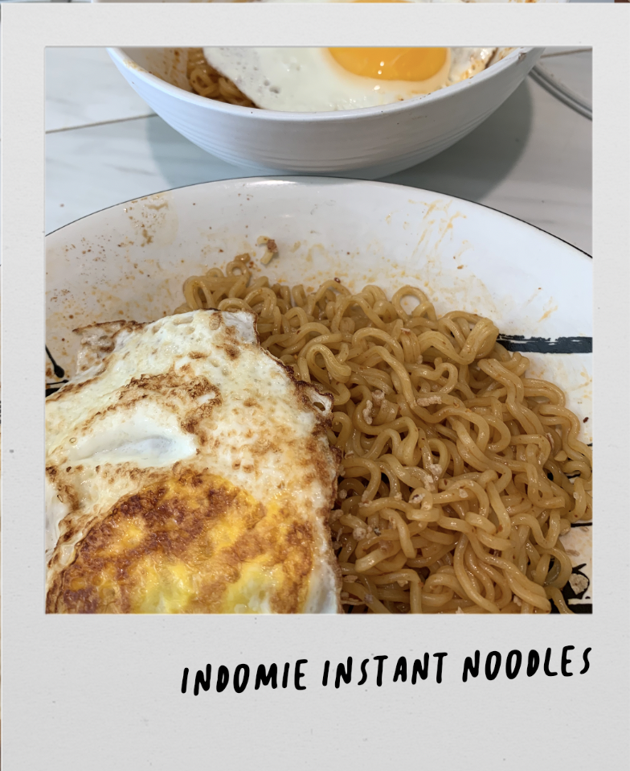

what you need
- indomie noodles! *you can get them in the nearest asian grocery store :)
- eggs (optional)
- optional: sambal *extra spicy sauce
how to make
- Heat up water on a mid-sized pot and once it's boiling, add your Indomie noodles. Cook it for 3-5 minutes depending on how you like your noodles.
- Strain the noods and put in a bowl, add the seasoning packets.
- Fry up an egg, sunny side up.
- ready to go! THANK ME LATER